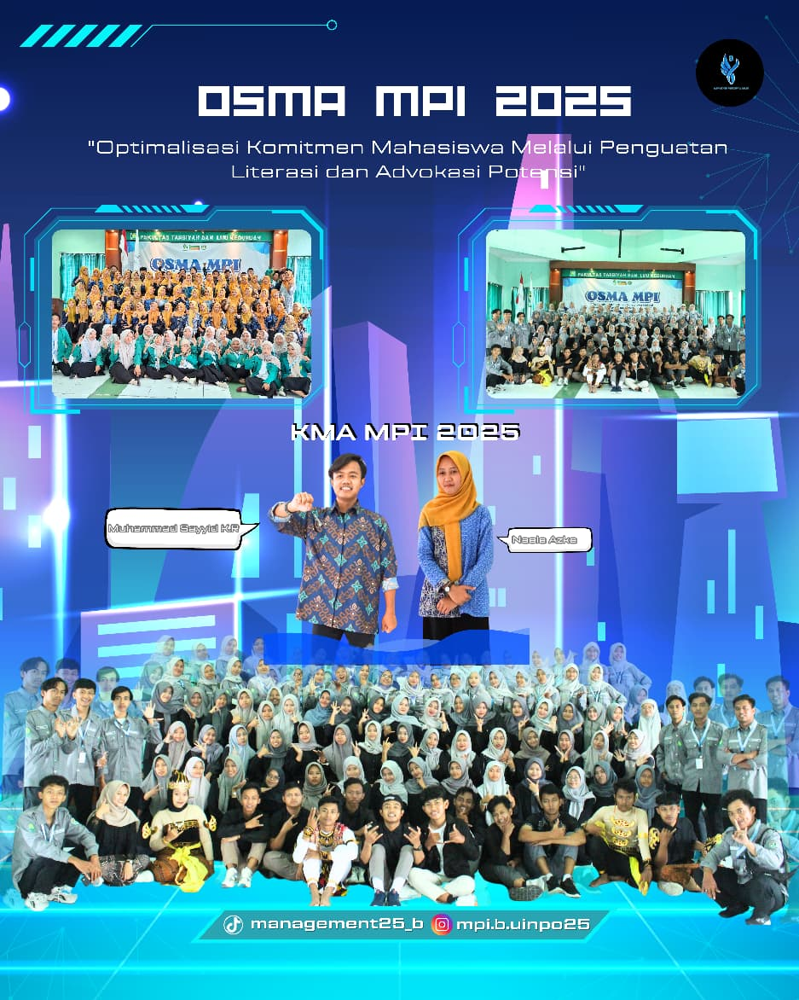

Tentang Kami
Kelas MPI B adalah bagian dari Program Studi Manajemen Pendidikan Islam. Website ini dibuat untuk menjadi wadah informasi kelas, penyimpanan makalah, dan profil akademik mahasiswa.

Kelas MPI B adalah bagian dari Program Studi Manajemen Pendidikan Islam. Website ini dibuat untuk menjadi wadah informasi kelas, penyimpanan makalah, dan profil akademik mahasiswa.